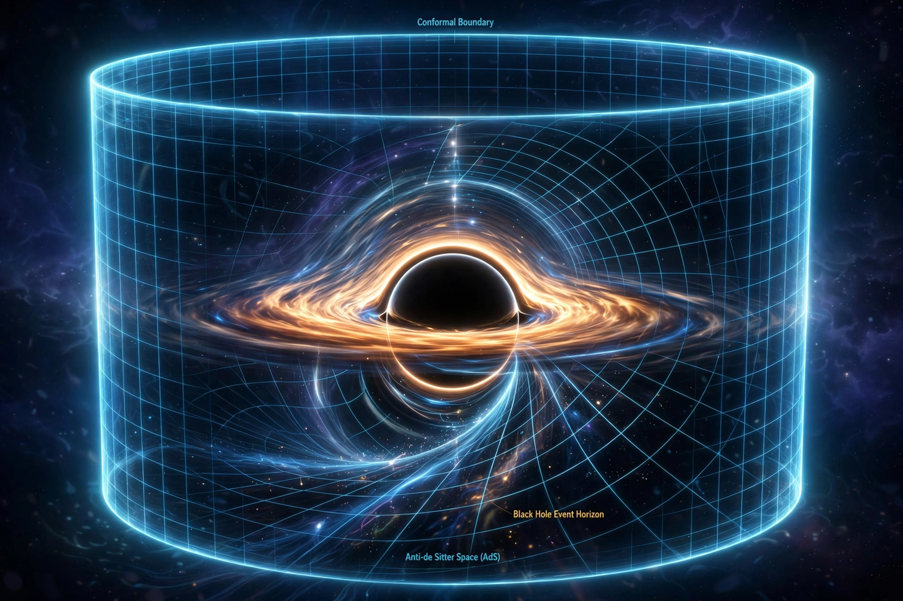

From Wikipedia, the free encyclopedia

Black holes in anti-de Sitter (AdS) space differ from their flat-space counterparts because the negative cosmological constant acts like a confining box: radiation emitted by a large AdS black hole is reflected back by the geometry, so the hole can reach stable thermal equilibrium with its own Hawking radiation.
In 1983 Stephen Hawking and Don Page showed that above a critical temperature, thermal AdS undergoes a first-order phase transition to a large black hole, which dominates the gravitational partition function. In the AdS/CFT correspondence, Edward Witten later interpreted this as the confinement–deconfinement transition of the boundary gauge theory: the thermal AdS phase corresponds to a confined plasma of glueballs, the black-hole phase to a deconfined quark–gluon plasma. Small AdS black holes, by contrast, have negative specific heat and are unstable, like Schwarzschild black holes in flat space.
In three spacetime dimensions, the BTZ black hole (Bañados, Teitelboim, and Zanelli, 1992) is an exact solution of gravity with a negative cosmological constant, despite the absence of local gravitational degrees of freedom in 3D. Its entropy matches the counting of states in the dual two-dimensional conformal field theory via the Cardy formula — one of the earliest precise holographic entropy matches.
AdS black holes have been the main arena for resolving the black hole information paradox: because the boundary CFT is manifestly unitary, evaporation in the bulk must be unitary too. "Island" computations in AdS setups reproduce the Page curve, supporting this expectation quantitatively.